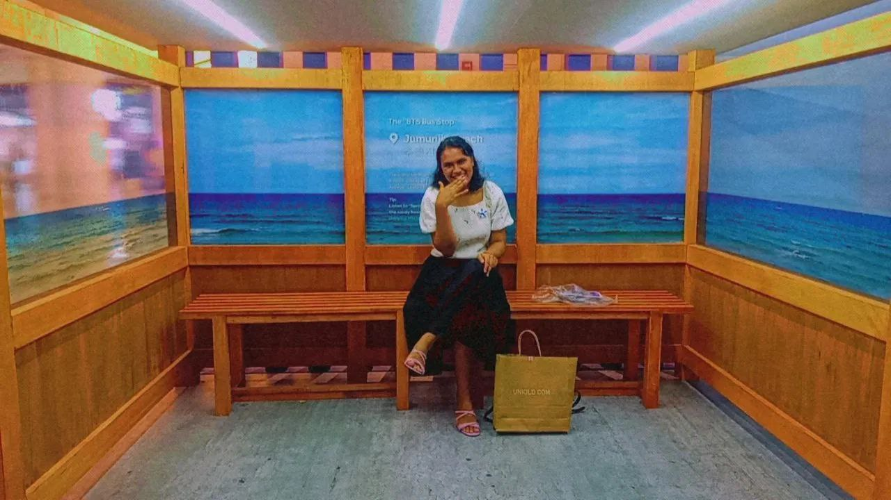

|  | ||
| Name | Ade Ruth Azlin a/p Awang | |
|---|---|---|
| Age | 20 Years old | |
| Gender | Female | |
| Race | Orang Asli | |
| Nationality | Malaysia | |
| State | Perak | |
| City | Tapah | |
My Biodata!!
I am the eldest of two siblings, but I was raised by my grandparents. I was born at Tapah Hospital. My hobby is listening to music because it helps calm my mind. The songs I often listen to are by the band Wave to Earth. My favorite genres are pop, indie, K-pop, and R&B. This year, I attended two concerts and felt thrilled to see my favorite artists.
My Favourite Song
Blue Jeans GanggaSkinnyfabs Happy